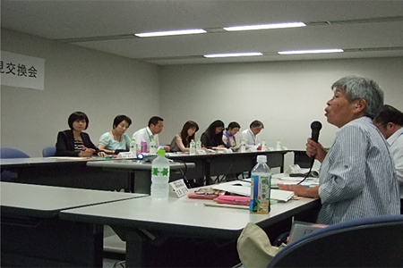

農林水産省関東農政局と埼玉県消費者団体との2014年度第1回意見交換会が7月3日（木）午後2時から、さいたま市のさいたま新都心合同庁舎で開催されました。意見交換会には、埼玉消団連、埼玉県生協連、埼玉母親大会連絡会、埼玉県生協ネットワーク協議会、さいたま市消費者団体連絡会の5団体から7名、関東農政局からは、小林関東農政局次長はじめ消費・安全部、企画調整室、農村計画部の2部1室より10名が出席されました。

冒頭、小林関東農政局次長より「都市部周辺における農業の役割は大きくなっている。本日は実践事例の報告をいただきながら、意見交換をおこないたい。意見として出たものを参考に、都市農業の振興をすすめていきたい」と挨拶がありました。
最初に、都市農業の振興について関東農政局農村計画部農村振興課の三善浩二課長より説明いただきました。「都市農業は、新鮮で安全な農産物の供給、災害時の防災空間、農業体験・交流活動の場、国土・環境の保全、心安らぐ緑地空間、都市住民の農業への理解の醸成の役割を持っている。近年は、区画貸しの他に農業体験・栽培体験を行う農園、高齢者や障害者を積極的に受け入れる農園等の多様な農園や、自治体と土地所有者が防災協定を結び、いざという時に自治体がすぐに利用できる防災農地としての取り組みなどが増加しており、都市住民のニーズに合わせたきめの細かい支援が必要。消費者の皆さんにも、都市農業を、食育の取り組みや、農とふれあう場として活用していただきたい」と話されました。
続いて、都市農業の事例として、石坂ファームハウスの石坂昌子さんが報告されました。
石坂さんは、東京都日野市で約一町の農地を耕作し、100種類の農作物を生産しながら、半自給の生活をしています。農作物の栽培とあわせて、 親子の農業体験
親子の農業体験 高齢者向け農体験農園
高齢者向け農体験農園 自然の恵みを楽しむ会
自然の恵みを楽しむ会 まぁるい食卓応援隊の取り組みをおこなっています。
まぁるい食卓応援隊の取り組みをおこなっています。
「農業体験を始めるきっかけは、都市住民に農地が荒らされたことから。自然や農地は管理している人がいてはじめて成り立っていることをわかって欲しいと始めた。これにより都市住民との共存が始まった。介護施設入居の高齢者を対象とした農業体験は、農作業に参加した高齢者が農作業に集中し杖や車いすを忘れるほど元気になる。自然の恵みを楽しむ会、まぁるい食卓応援隊では、昔ながらの食文化、食習慣、行事食などを伝えている。今後は、取組を通じて都市住民の都市農業への理解の醸成をすすめていく」と話されました。
事例報告の後の意見交換では、「都市農業（＊1）の定義はなにか」、「災害時の防災空間としての役割（＊2）とは具体的になにか」、「「農業女子」はどれくらいいるのか。どんな活動をしているのか」など活発に質問が出され、都市農業の現状について理解を深めました。
＊1．都市農業について
都市農業は、都市及びその周辺における農業で、一般には都市計画法の市街化区域内及びその周辺で営まれている農業。こうした環境の中で農業を継続したいと思っている方への支援をきめ細かく行うことが課題です。都市部の農地を守っていく上で、都市住民の都市農業への理解と応援が必要です。
＊2．災害時の防災空間としての役割
災害発生時には所有者に断り無しで農地を避難場所・資材置場等として使用できる協定を、土地の所有者と自治体で結んでいます。関東農政局管内では約50市区が協定を結んでいます。